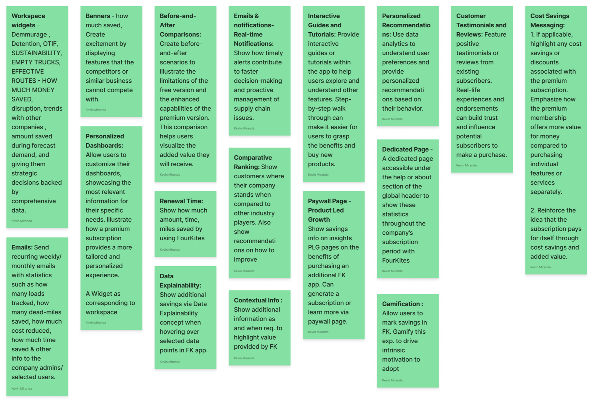
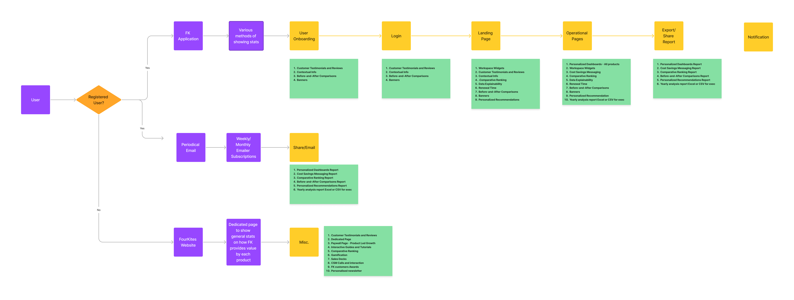
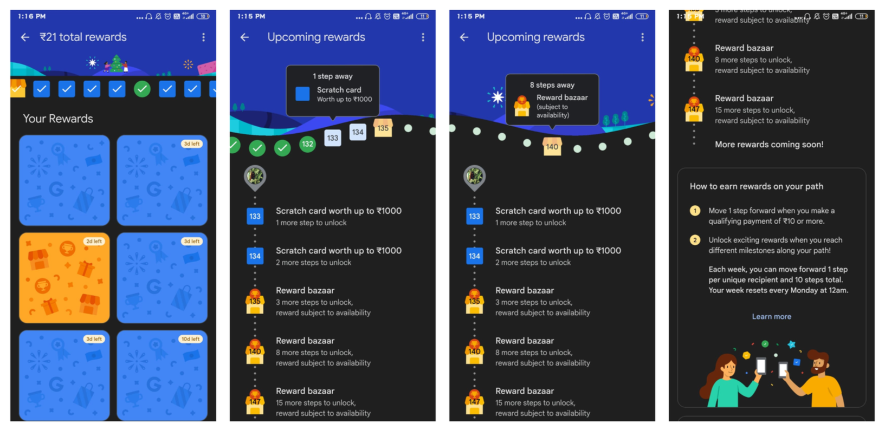
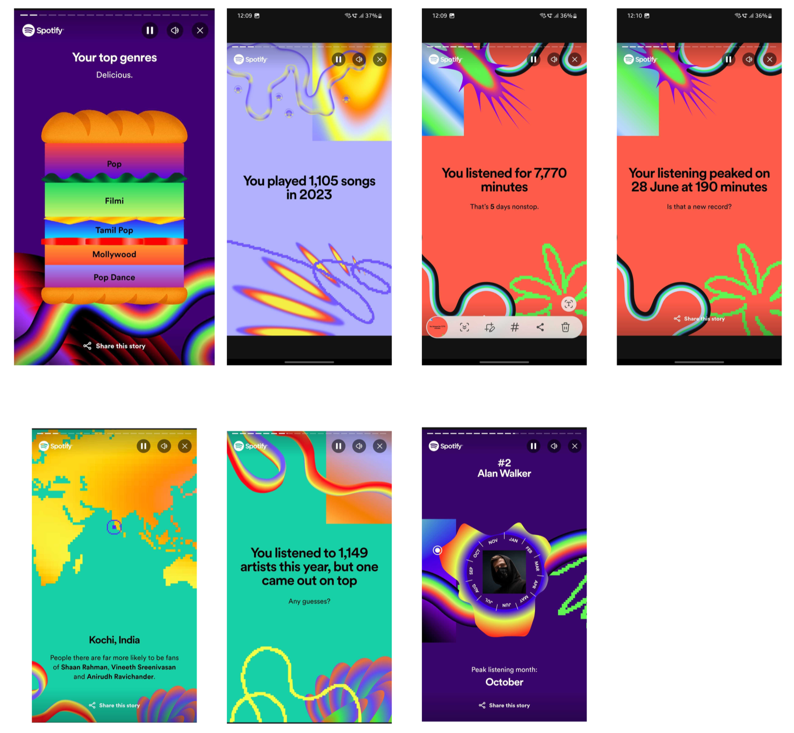
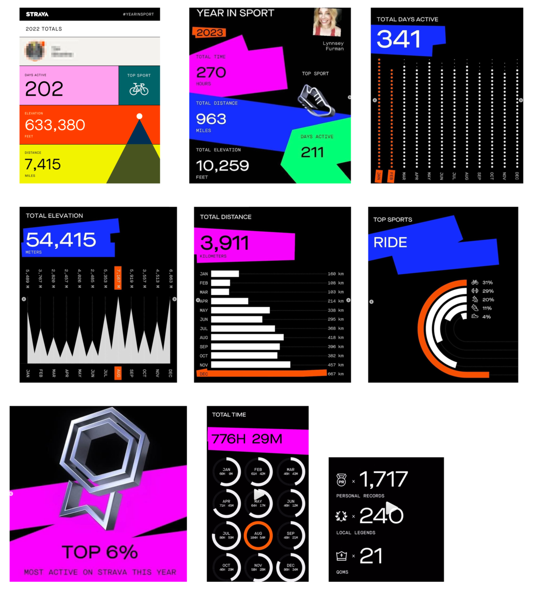
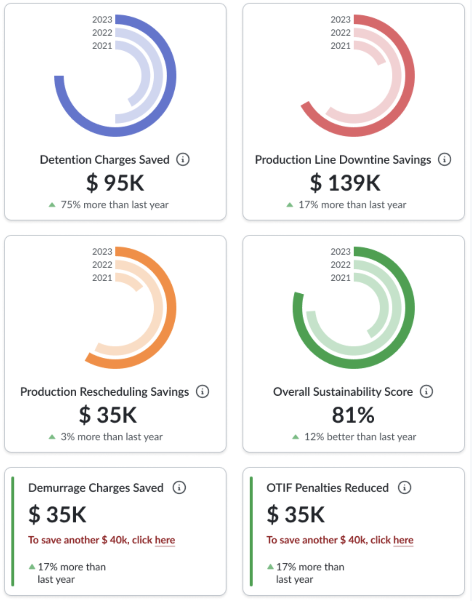
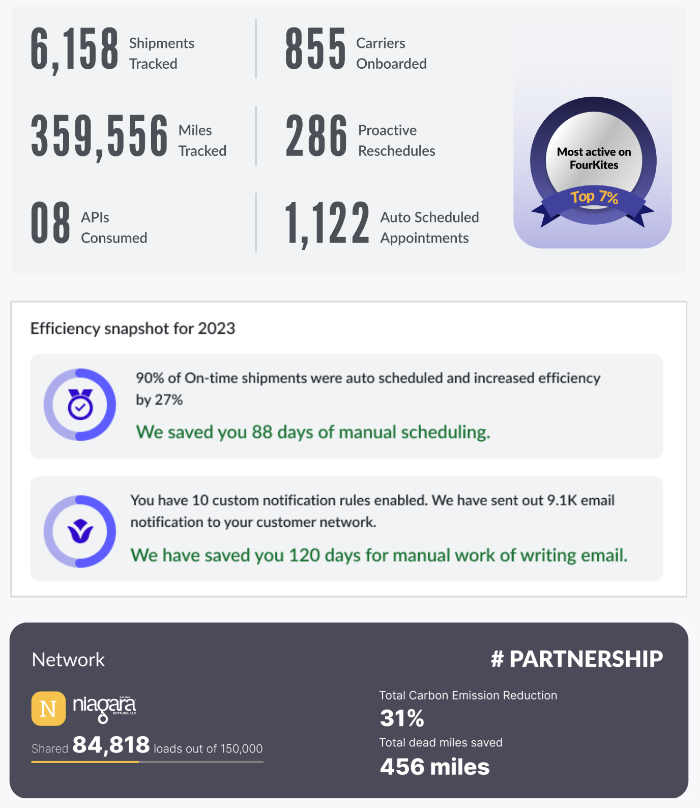
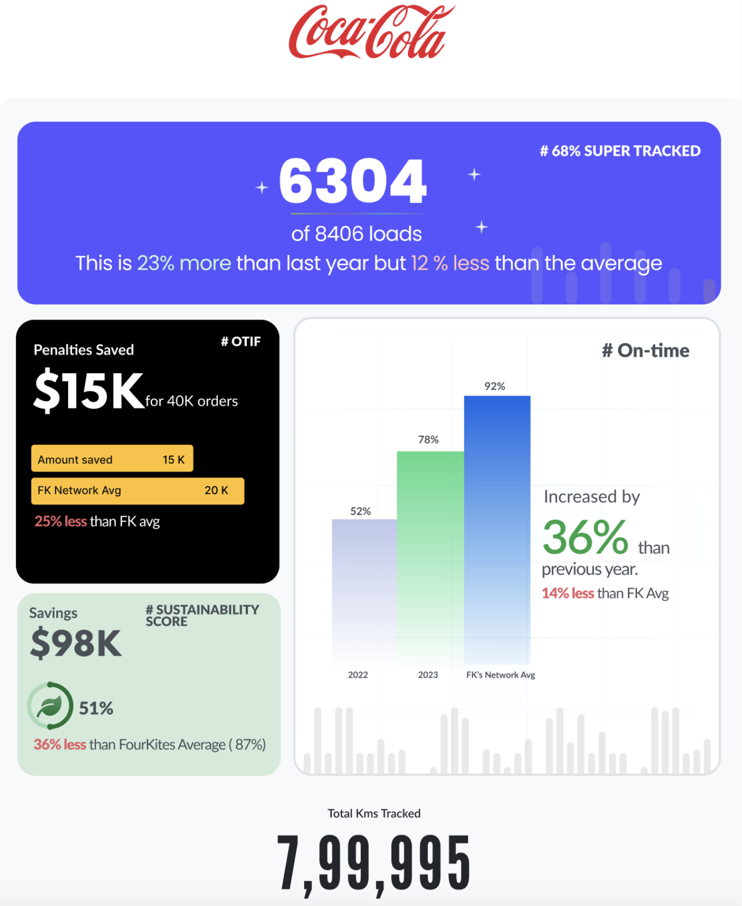
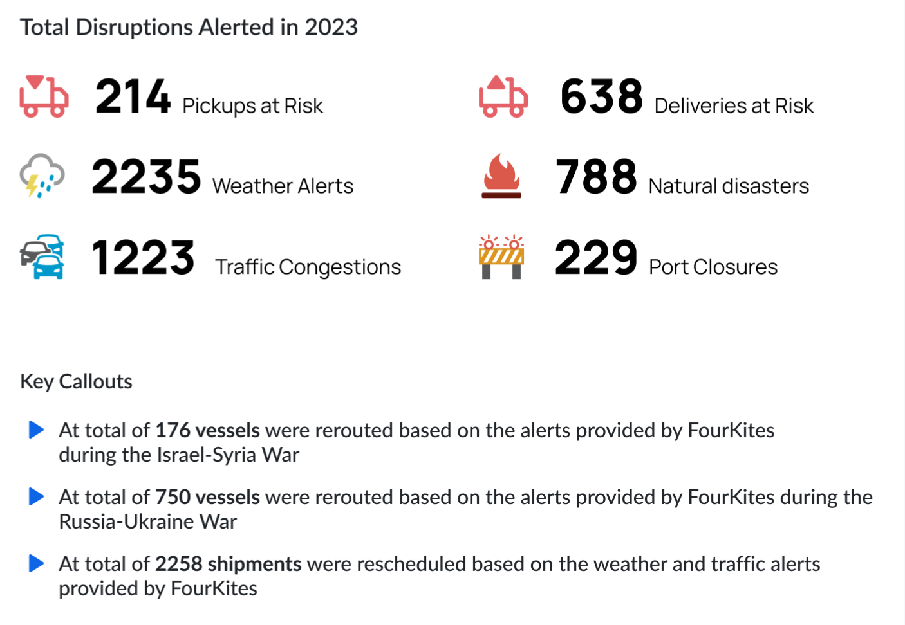
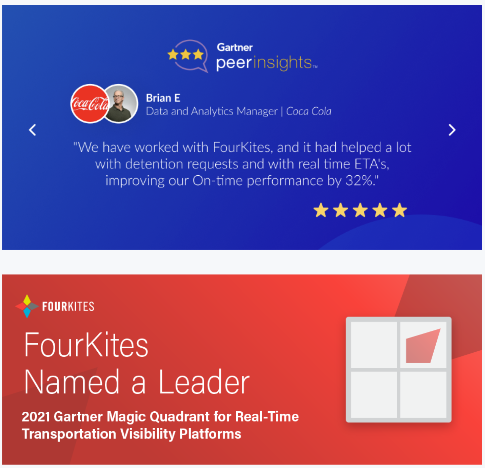

Making the Invisible Visible: ROI into Retention
Turning abstract ROI data into a tangible "Value Realization" experience that shortened renewal cycles.
Design Leadership · Value Communication
A design-led approach to helping customers see, feel, and trust the value they're getting. (8 minute read)
Context & business challenge
Problem: Customers weren't perceiving or articulating the value they gained from FourKites.
- Executives struggled to justify renewals with tangible evidence.
- Renewal cycles were long and difficult, with churn risks high.
- Upsell conversations lacked strong proof points.
Strategic Mandate: Elevate value communication from a feature-level conversation to a C-suite business case, positioning FourKites as a trusted partner rather than just a visibility tool.
My role as Director of UX
- Framed the opportunity: Positioned value realization as both a design challenge (how customers see and feel value) and a business growth lever (retention + upsell).
- Executive alignment: Partnered with Sales, CS, and Product leadership to link design outcomes to revenue KPIs (renewals, NPS, churn reduction).
- Led the initiative: Directed a multi-disciplinary team across design, product, data science, and marketing.
- Customer voice: Brought in customer success managers and executive sponsors to co-validate value metrics and storytelling.
Key challenges
- Invisible Value: Customers used FourKites daily but lacked visibility into ROI.
- Renewal Friction: Long 8–12 month sales cycles; executives unconvinced without data-backed proof.
- Churn Risks: Users disengaged when they couldn't justify cost-to-value.
- Elevate Our Brand to the C-Level: Highlight the real, measurable value to our customers to gain executive attention and approval.
- Enhance Customer Engagement and Retention: Ensure value realization to keep customers engaged and satisfied with our products.
- Differentiate from Competitors: Highlight our unique value propositions to stand out in the market.
- Foster Trust and Credibility: Consistently highlight value to build trust and establish credibility with customers.
- Open Opportunities for Upsell: Use value communication to create upsell opportunities and drive additional revenue.
Strategy & design approach
- Value Framework: Defined a system to quantify cost savings, workforce productivity, sustainability improvements, and service quality.
- Inspiration: Borrowed from consumer paradigms like Spotify Wrapped and Strava Recap to make ROI tangible, personal, and habit-forming.
- Multi-channel delivery: Embedded value communication across:
- Workspace dashboards (daily visibility)
- Periodic value emails (executive reporting)
- Sales/renewal collateral (boardroom-ready storytelling)
- Upsell Triggers: Contextual nudges highlighting how peers benefited from additional FourKites modules.
Execution
- Conducted a design workshop with cross-functional stakeholders (Sales, CS, Product, Data Science) to brainstorm value communication concepts.
- Used design benchmarking (e.g., gamification in GPay, performance summaries in Strava) to validate approach.
- Guided the design team through prototypes, executive validation sessions, and pilot rollouts.
Business impact
- Renewal Confidence: Equipped users with C-suite-ready metrics, reducing friction in renewal conversations.
- Retention: Strengthened trust by consistently demonstrating measurable ROI.
- Upsell Growth: Contextual ROI storytelling created new upsell opportunities.
- Brand Elevation: Positioned FourKites as a business outcome partner, not just a visibility provider.
This initiative was less about a single feature and more about orchestrating a shift in how customers perceive FourKites' value. By aligning design with revenue strategy, I helped transform invisible benefits into visible, measurable, and repeatable proof points — directly influencing retention and upsell.
Design execution
Ideas generated

Affinity

User journey

Design benchmarking



Design solutions
Quantifying Cost Savings
- Workforce productivity Savings
- Reduced Transportation Cost
- Inventory related savings
- Revenue uplift
- Yard Savings

Quantifying the intrinsic value

Periodic analytics emails
- Dollar Saved
- OTIF Performance along with benchmark
- Sustainability Improvements
- Tracking Quality Highlights
- User Testimonials
- Upsell Triggers
- Upcoming Features or Updates

Alerts and Recommendations
- Proactive Problem-Solving
- Risk Mitigation
- Enhancing Decision-Making
- Encouraging Regular Engagement
- Driving Continuous Improvement

Fostering Trust
- Customer Success Stories and Testimonials
- Emphasizing awards and collaboration

Upsell Opportunity
- Contextual upsell trigger along with statistics on how other customers benefit from other products.